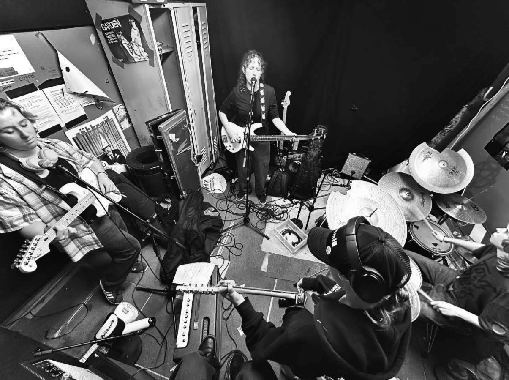
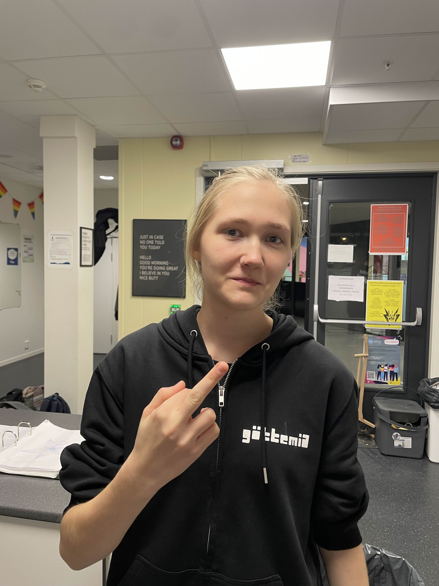
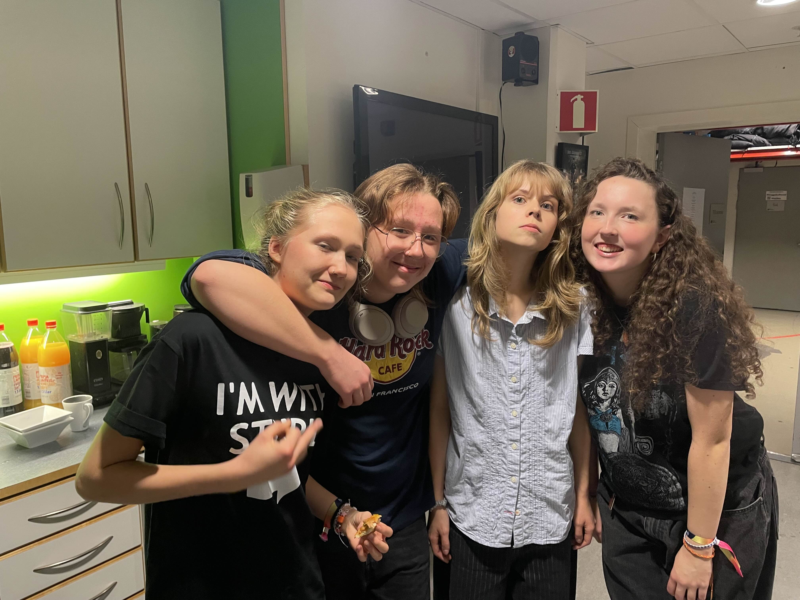

Vennene i bandet Wepsebol rocker seg gjennom hverdagen
Fire tenåringsjenter fra Halden med et klart mål og ekte vennskap står bak bandet Wepsebol – de ønsker å inspirere andre unge til å tørre å ta en sjanse, og dermed utfordre seg selv i livet. Og nå skal de opptre på Ungdommens Kultur Mønstring (UKM) i Halden.
Målet er å komme videre til fylkesmønstringen.
Datoen er fredag 1 november på Rockehuset i Halden. Inn kommer en jente gående opp de bratte steintrappene inne på rockehuset, med en gitarbag som ser alt for tung ut. Jenta er Mina Waleur, som er bandleder i rockebandet Wepsebol. Hun hilser pent på alle, tar seg en kopp kaffe, og begynner å rigge et trommesett. Hun venter nemlig på at venninnene hennes skal komme slik at de kan øve. Om to dager, skal de opptre på UKM. Og målet, det er selvfølgelig å komme videre til fylkesmønstringen, hvor de får muligheten til å konkurrere om en plass i den nasjonale UKM-festivalen.
På spørsmål om hun er nervøs svarer Mina nei, men det er viktig at vi presterer så godt vi kan slik at vi kan komme videre. Det viktigste er jo på en måte å delta, ha det gøy, og vise hva man kan sier hun. Oppsettet står klart på øvingsrommet og resten av bandet har dukket opp. Emma setter seg i trommestolen, Fiona plukker opp bassen sin, og Elise stemmer gitaren sin.

Noen minutter senere kaster jentene et kort blikk på hverandre, Emma slår trommestikkene mot hverandre fire ganger og der er de i gang. Bandet holder et høyt tempo gjennom låtene sine og det blir høylytt, så høyt at det er nødvendig med ørepropper. De spiller musikk av typen punk-rock, og låtene deres er inspirert av livene deres. Musikken bærer preg av følelser, vennskap, urettferdighet, og til dels politiske budskap.
Etter en times tid med øving er det på tide med en pause, og jentene begynner å snakke om UKM. Emma sier at hun heller ikke er særlig nervøs, men at hun alltid kjenner litt på det, spesielt nå som det er ganske mange band som er med i konkurransen. Fiona har derimot vært med flere år på rad, og sier det er null stress med et lurt smil om munnen.
Målet med bandet deres er å kunne bruke musikken som en slags pause. Mina sier at det viktigste er at de får reist rundt og opplevd nye steder og mennesker, og viktigst av alt, ha det gøy sammen med vennegjengen.
Elise mener det også er viktig å kunne vise andre at musikk kan være så mye forskjellig, og hvor viktig det kan være å ha en hobby som ungdom slik at man kan ha noe annet å fokusere på enn alt som hverdagen har å by på som ungdom. Jentene sier det er stressende å være ungdom til dags. Det er et press om å prestere på skolen, være en god venn, og det er spesielt vanskelig når alle ser ut til å leve et perfekt liv på sosiale medier. Selv om vi vet at alt vi ikke ser er ekte, så lurer man fortsatt på om man gjør det bra nok, sier Fiona.
«Stort Fuck You»
Vi sitter på ungdomshuset i skofabrikken og spoler tilbake til lørdag 26 november. Wepsebol har fått være med på UKM-festivalen. Festivalen fant sted i Askim og det var duket for forestilling. Bandet hadde lenge gledet seg til dagen. På UKM-festivalen kommer det artister, kunstnere, og dansere fra hele fylket. Det gir en gyllen mulighet til å vise seg frem, bli kjent med nye fjes og kanskje få nye venner.
Men for Wepsebol ble det heller en dag preget av frustrasjon og skuffelse. Jentene reagerer kraftig på at alle band får en helt vanlig introduksjon. Navn, type band, og deretter en velkomst. Men slik ble det ikke for jentene. Når det var deres tur til å gå på scenen ble de introdusert som «Jentebandet Wepsebol». De tenkte at det var greit en gang, men det gjentok seg. De ble referert til som jentebandet gjentatte ganger av ansatte på UKM, foreldre og konferansierer.
Jentene synes det er kjipt at det skal legges så mye vekt på at det er jenter. De forstår at hensikten er å vise hvem de er, men de føler ikke at det er nødvendig.
Journalisten spør Elise om hvorfor det var galt å kalle dere for et jenteband?
«Vi syntes det var veldig rart at alle guttene som spilte i band ikke fikk noen tittel basert på kjønnet deres når de ble ropt opp. Det føltes som at jentene som spilte i band var spesielle fordi det ikke var like vanlig. Det var på en måte helt normalt for guttene å ha band, men det var kulere at vi klarte det bare fordi vi er jenter.. nesten som om jenter ikke kan rocke like bra» svarer hun.
Mina er litt mer vokal i sin mening om de som kaller de for et jenteband. Hun trekker langfingeren sin og sier, «denne går til alle som kaller oss for et jenteband, fuck you».

Klare for å spille
Klokken 10 står vi utenfor brygga kultursal og venter på å komme inn. Om en time skal alle påmeldte på scenen å få gjennomført lydsjekkene sine. Wepsebol kommer sammen, de har fått et eget rom backstage. De plukker meg seg en baguette og en kopp kaffe hver fra kjøkkenet og slår seg til ro.
De har med tang og skrutrekker. Mens andre deltagere står på scenen og gjennomfører lydprøvene sine, skal jentene i Wepsebol skifte ut strengene på gitarene og bassen. Det får en mye bedre klang og lyd hvis man har rene eller helt nye strenger sier Elise. På andre siden av rommet sitter Emma med et hodetelefoner på, trommestikker i hendene, og spiller trommer ut i løse luften. Etter lydprøve er jentene veldig fornøyde. De føler seg klare og er spente.
I dag har de med seg en ny låt som de vil presentere for publikum. Låten heter gjerningsmann. Den handler om når man ikke liker en person som er falsk og lyver, når man har problemer med en som ser perfekt ut og ingen andre klarer å se den dårlige siden av personen enn en selv forteller Emma.
Jepp, hører man Mina si i bakgrunnen med mat i munnen.
Det er på en måte litt som Israel i dag. Ingen klarer å se at de er falske og farlige sier Fiona og får vennene sine til å le.
Etter at de har fått i seg litt pizza og slappet av sammen, er det deres tur. Nå skal Wepsebol ut og vise hva de kan. Emma passer på at alle er klare til riktig tid.
Wepsebol var en av de siste som gikk ut. Som de hadde lovet tidligere, ble det høylytt og det ble fart. Selv er de fornøyde med egen opptreden når de kommer inn backstage og de er enige med hverandre i at de gjorde sitt beste. Nå må vennene bare vente spent før de får vite om de er kommet videre til fylkesmønstringen.
